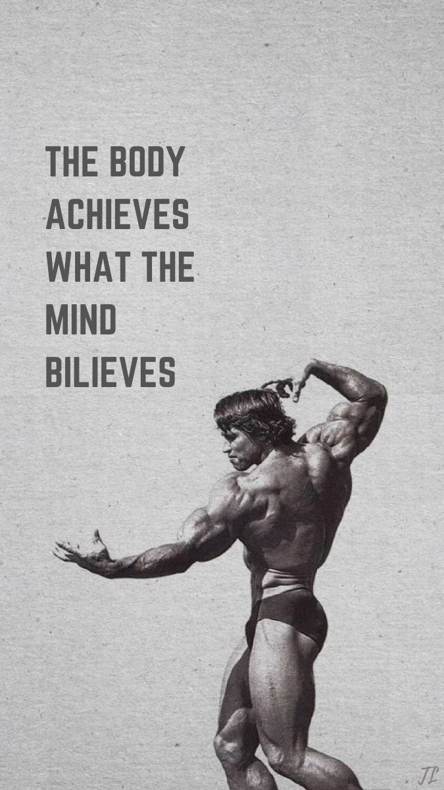

CSS Grid Practical Tasks
Task 6: Basic Website Layout (Header, Sidebar, Content, Footer)
Task 7: Responsive Photo Gallery


Task 8: Dashboard Layout
Navigation
Stats Panel
Chart Area
Data Table
Task 9: Convert Flexbox Layout into Grid
Before: Flexbox Layout
After: Grid Layout
Task 10: Blog Homepage Layout